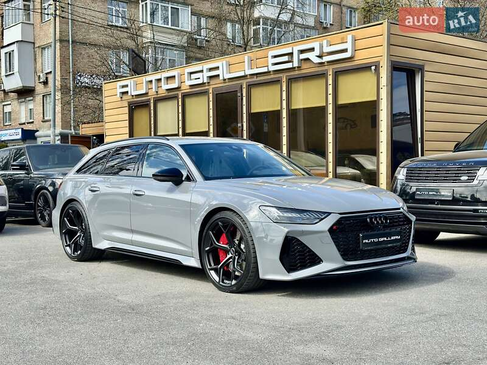
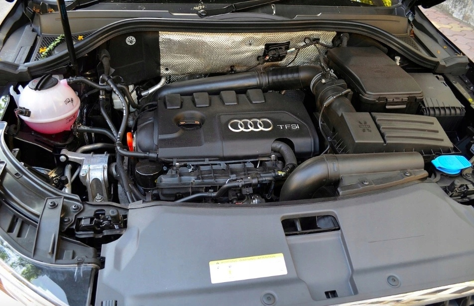

Audi Q3
Audi Q3
Audi Q3 — це компактний кросовер, який поєднує в собі німецьку якість, сучасні технології та динамічний дизайн. Вперше модель була представлена у 2011 році, а вже у 2018-му побачило світ друге покоління Q3, яке стало ще просторішим, комфортнішим та технологічно досконалішим.
Характеристики
Двигуни (популярні варіанти) Бензинові: 1.5 TFSI Потужність: 150 к.с. Крутний момент: 250 Нм Розгін 0–100 км/год: ~9,2 с Витрата пального: ~6,5 л/100 км Привід: Передній 2.0 TFSI (quattro) Потужність: 180–230 к.с. Крутний момент: 320–350 Нм Розгін 0–100 км/год: 6,3–7,1 с Витрата пального: ~7,5 л/100 км Привід: Повний (quattro)
Особливості

🔹 1. Преміум-якість у компактному форматі Audi Q3 – це ідеальний варіант для тих, хто хоче відчути всі переваги преміум-сегменту, але в компактнішому та зручному для міста кузові. Авто має високоякісні матеріали оздоблення, акустичну ізоляцію та фірмову стриманість Audi. 🔹 2. Віртуальна панель приладів (Audi Virtual Cockpit) Цифровий дисплей замість класичних аналогових приладів — одна з «фішок» Audi. Його можна налаштовувати: показ навігації, медіа, обертів і швидкості, економії пального тощо.